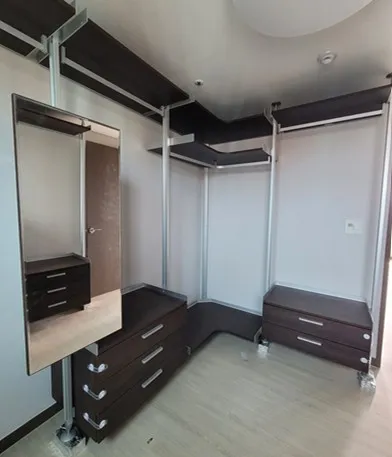

Extra Cost
시스템행거 이사
추가비용
추가비용은 미리 알면 걱정할 일이 줄어듭니다.
이사하면서 시스템행거를 옮길 때는 해체와 설치 외에 운반 조건이 비용에 영향을 줍니다. 엘리베이터가 없는 계단 운반, 긴 폴이 들어가지 않는 작은 엘리베이터, 먼 이동 거리, 해체일과 설치일이 나뉘는 일정이 대표적입니다.
코니처는 상담 단계에서 이런 조건을 먼저 여쭤보고, 더해질 수 있는 부분을 미리 설명드립니다. 작업 당일에 예상하지 못한 비용 이야기가 나오지 않도록 하기 위해서입니다.

Situations
추가비용이 생길 수 있는 경우
엘리베이터가 없을 때
계단으로 폴과 부속을 옮기는 시간이 더해집니다.
엘리베이터가 작을 때
긴 폴이 들어가지 않으면 계단을 함께 써야 합니다.
해체일과 설치일이 다를 때
방문이 두 번으로 나뉩니다.
이동 거리가 멀 때
두 집 사이 이동 시간이 길어집니다.
Checklist
미리 알려주시면 좋은 조건
| 조건 | 알려주실 내용 | 이유 |
|---|---|---|
| 기존 집 | 층수, 엘리베이터 유무 | 반출 방법을 정합니다 |
| 새 집 | 층수, 엘리베이터 크기 | 반입 방법을 정합니다 |
| 이동 거리 | 두 집의 동 이름 | 이동 시간을 계산합니다 |
| 일정 | 해체일·설치일 | 방문 횟수를 정합니다 |
| 주차 | 작업 차량 정차 가능 여부 | 운반 동선을 짭니다 |
Process
추가비용 확인 순서
조건 확인
두 집의 층수, 엘리베이터, 거리, 일정을 여쭤봅니다.
추가 항목 설명
더해질 수 있는 부분을 항목별로 설명합니다.
비용 확정
모든 조건을 반영해 비용을 안내합니다.
해체·운반
정한 방법대로 해체하고 옮깁니다.
설치·점검
새 집에 설치하고 흔들림을 확인합니다.
FAQ
자주 묻는 질문
이삿짐 차에 같이 실어도 되나요?
가능합니다. 이 경우 해체와 설치만 맡기시면 되고, 운반은 따로 하지 않아도 됩니다.
사다리차가 필요할 때도 있나요?
행거 부품은 분해하면 대부분 엘리베이터나 계단으로 옮길 수 있습니다. 큰 서랍장 같은 부속이 있을 때만 따로 확인합니다.
주차가 어려운 곳이면요?
작업 차량을 어디에 댈 수 있는지 미리 알려주시면 운반 동선을 계획합니다.
추가비용은 언제 알 수 있나요?
상담 단계에서 조건을 확인한 뒤 안내합니다.
같은 날 해체·설치하면 달라지나요?
방문이 한 번으로 줄면 일정이 간단해집니다. 조건에 따라 안내해 드립니다.